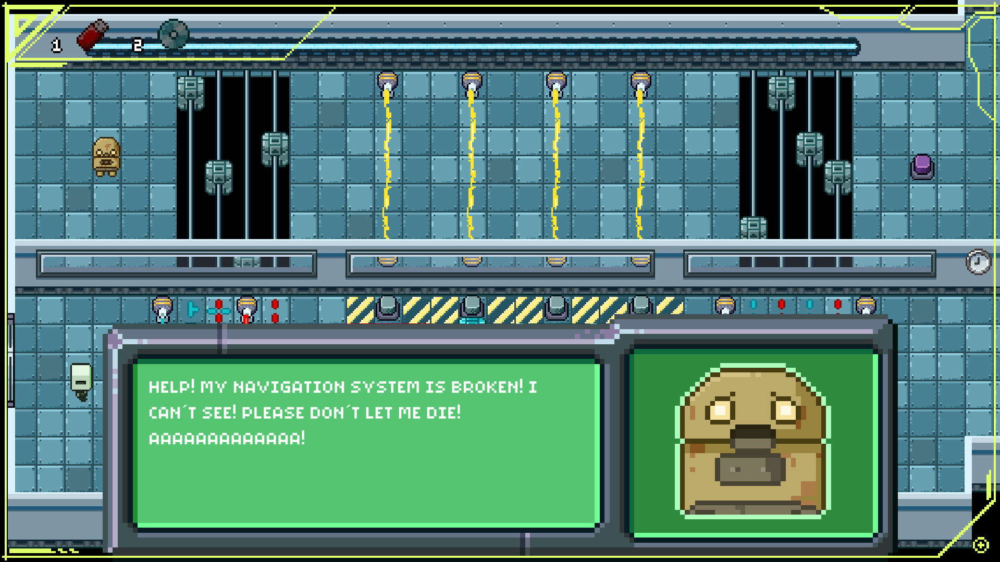
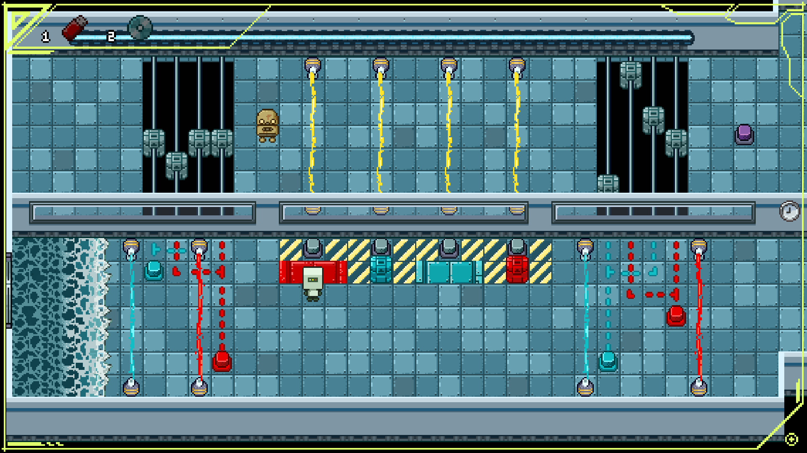

Mobie's Escape is a 2D puzzle platformer developed as a university team project. The core mechanic revolves around revealing colors to remove obstacles of the same color, creating simple yet challenging puzzle sequences.

Key Features
- 2D Puzzle Platformer with color-based puzzle mechanics.
- Reveal and erase color-matching obstacles to progress through levels.
- Hand-crafted level design balancing logic and timing challenges.
- Simple, clean, and colorful minimalist art style.
My Role
As one of the programmers on the project, I contributed to:
- Design and creation of the final game levels.
- Programming level logic, including hit detection and puzzle object interactions.
- Developing the checkpoint system to handle player progress.
- Implementing inventory management logic for puzzle progression.
- Scripting cutscene triggers and animation events for the ending sequence.
Screenshots

